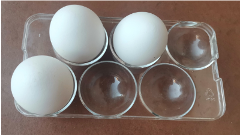
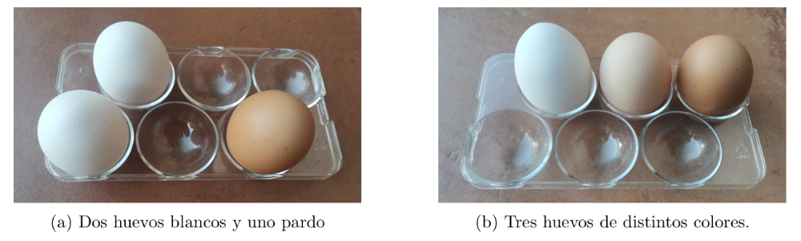

Hay veces que elegimos sin que nos importe muy bien el orden de elección, sólo si elegimos a unos o a otros...
Los huevos de Bili
El otro día en mi pueblo, Juzbado, fui a comprar huevos a mi vecina Bili. Ese día sólo habían puesto tres sus gallinas. Observa la siguiente imagen en la que se muestra una huevera con capacidad para seis huevos..

- ¿De cuántas formas podrías colocar los tres huevos blancos de la imagen en la huevera? ¿Eres capaz de describir exhaustivamente todas esas formas de un par de maneras distintas?
- En la anterior pregunta has encontrado las formas de colocar los 3 huevos en la huevera de capacidad 6. Describe el número de formas de colocar, sucesivamente, 0, 1, 2, 3… 6 huevos en dicha huevera. ¿Qué observas? ¿Hay alguna relación entre estos números que has obtenido?
- En la siguiente imagen se muestra la misma huevera, que contiene tres huevos, pero ahora son de distintos colores. En la imagen de la izquierda tienes dos huevos blancos y uno pardo. En la de la derecha los tres huevos tienen colores distintos. ¿De cuántas formas se pueden colocar los tres huevos en cada caso? Intenta relacionar estas formas con las calculadas en el primer apartado.

Asignaturas optativas
Un alumno debe elegir 3 asignaturas optativas de entre 7 disponibles.
¿De cuántas formas distintas puede hacer la elección?
Combinaciones
En los problemas anteriores hemos elegido varios elementos de un conjunto, sin que el orden de elección sea relevante.
Combinaciones sin repetición
Se llaman combinaciones sin repetición las formas de elegir \( k \) elementos distintos tomados de entre \( n \) elementos distintos, de manera que:
– no se utilizan todos los elementos,
– no se repite ninguno,
– el orden no importa.
El número de combinaciones sin repetición de \( n \) elementos tomados de \( k \) en \( k \) es:
\( \displaystyle C_{n,k} = \binom{n}{k} = \frac{n!}{k!\,(n-k)!} \)
Dos selecciones que solo se diferencian en el orden se consideran la misma combinación.
Helados
En una heladería hay 5 sabores distintos. ¿De cuántas formas se puede elegir un helado de 3 bolas de distintos sabores? ¿Y si pudiera repetir sabores?
Caramelos
En una bolsa hay caramelos de 4 sabores distintos. ¿De cuantas maneras distintas podemos meter la mano y sacar 6 caramelos?
Combinaciones con repetición
En algunos problemas podemos elegir varias veces el mismo elemento y el orden sigue sin importar.
Combinaciones con repetición
Se llaman combinaciones con repetición las formas de elegir \( k \) elementos tomados de entre \( n \) elementos distintos, permitiendo que se repitan, y sin que el orden sea relevante.
– no se utilizan todos los elementos,
– se pueden repetir,
– el orden no importa.
El número de combinaciones con repetición viene dado por la fórmula:
\( \displaystyle CR_{n,k} = \binom{n+k-1}{k} \)
Esta expresión puede interpretarse mediante el método de las estrellas y barras.
Método de las estrellas y barras
El método de las estrellas y barras permite contar de cuántas formas se pueden repartir \( k \) objetos iguales entre \( n \) categorías distintas.
Para ello, representamos:
– cada objeto mediante una estrella (\( \star \)),
– la separación entre categorías mediante barras (\( | \)).
Por ejemplo, elegir un helado de 3 bolas entre 5 sabores equivale a repartir 3 bolas entre 5 sabores.
Una posible elección sería:
\( \star \star \, | \, \, | \, \star \, | \, | \)
En esta representación:
– el primer sabor tiene 2 bolas,
– el segundo y el tercero no tienen ninguna,
– el cuarto tiene 1 bola,
– el quinto no tiene ninguna.
En total hay:
– \( k \) estrellas,
– \( n-1 \) barras.
Cada distribución distinta de estrellas y barras corresponde a una elección distinta. Por tanto, el número total de formas de colocarlas es el número de formas de elegir las posiciones de las \( k \) estrellas entre los \( n+k-1 \) símbolos:
\( \displaystyle \binom{n+k-1}{k} \)
Esta es la fórmula de las combinaciones con repetición.